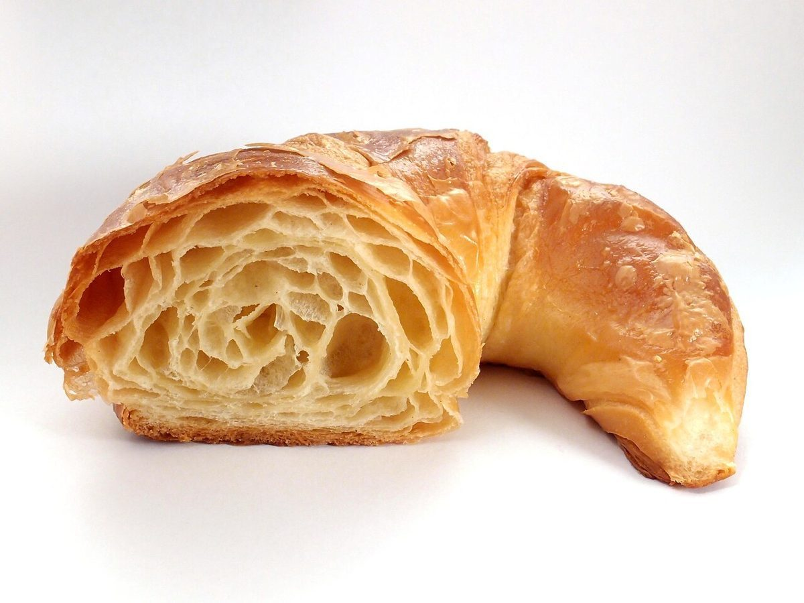
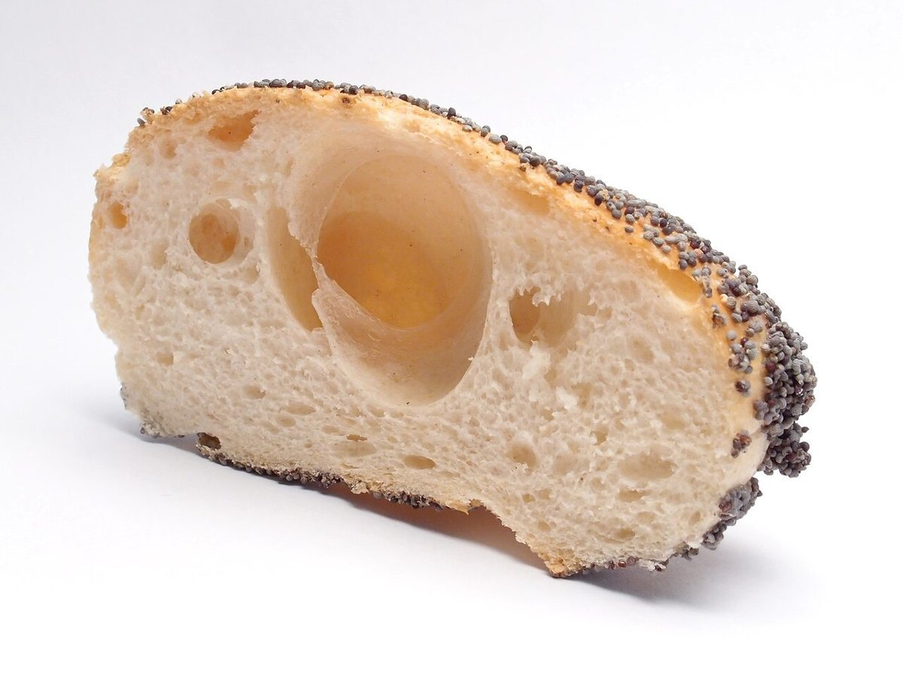

▲ 立ち上がり縁 / メニュー
縁のうちがわ
立ち上がり縁は、水盤をぐるりと囲む部分です。ここにはメニューを載せる予定です。
商品名・価格・内容は、お店からご提供いただいてから掲載します。
- メニュー
- 準備中
- 価格
- 準備中
- 予約
- 準備中



上の写真はフリー素材のイメージで、お店の商品ではありません。
写真の出典
写真はお店のものではなく、国外か撮影地不明のフリー素材で、この店・この地域・商品を写したものではありません。縮小・切り抜きなどの加工をしています。
- Croissant, whole / SKopp / CC BY-SA 3.0(撮影地: 不明)
- Croissant, cross section / SKopp / CC BY-SA 3.0(撮影地: 不明)
- Bread roll with crumb hole / SKopp / CC BY-SA 3.0(撮影地: 不明)